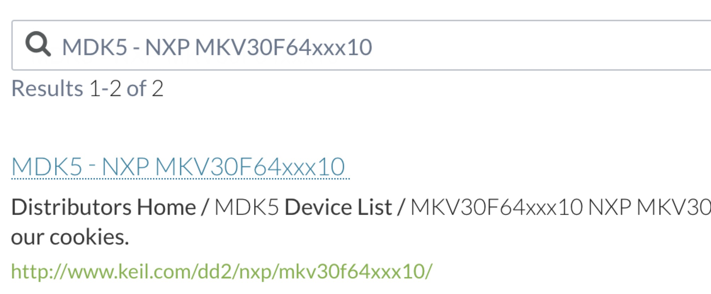
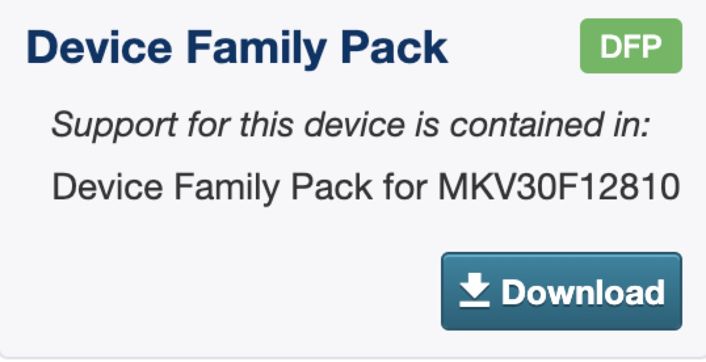

1.MCU 集成开发环境
2.基于 NXP 的 Keil 开发环境搭建
2.1.下载并安装 Keil
2.2.下载 Keil SDK
2.3.下载 Package
2.4.Keil 工程搭建
2.4.1.添加目录结构树
2.4.2.修改 Options
2.4.3.使用 MCUXpresso Config Tools 生成代码
2.4.4.HelloWorld 示例
3.基于 NXP 的 IAR 开发环境搭建
3.1.下载并安装 IAR
3.2.下载 IAR SDK
3.3.IAR 工程搭建
3.3.1.添加目录结构树
3.3.2.修改 Options
3.3.3.使用 MCUXpresso Config Tools 生成代码
3.3.4.HelloWorld 示例
4.基于 NXP 的 MCUXpresso 开发环境搭建
4.1.下载并安装 MCUXpresso IDE
4.2.下载并安装 MCUXpresso Config Tools
4.3.下载 MCUXpresso SDK
4.4.使用 MCUXpresso Config Tools 生成代码
4.5.使用 MCUXpresso IDE 调试代码
4.5.1.开启视图窗口
4.5.2.加载 Xpresso SDK
4.5.3.HelloWorld 示例
Published with GitBook
2.3.下载 Package
2.3.下载 Package
Package 下载地址
Step 1.搜索你要下载的 arm 芯片，在这里以 NXP MKV30F64xxx10 为例
Step 2.选择 MD5-NXP MKV30F64xxx10

Step 3.页面右下角下载 Pack，点击 Download

Step 4.点击 OK
Step 5.打开下载好的 Pack，它会自动搜寻你的 Keil 路径，点击 Next
Step 6.选择 I agree，点击 Next
Step 7.点击 Finish
results matching "
"
No results matching "
"